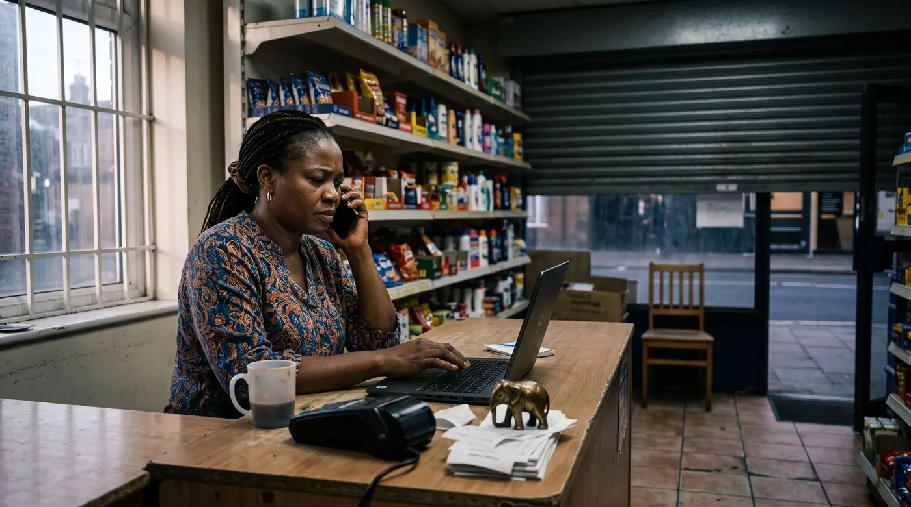

Frozen Merchant Funds: What to Do When Your Payout Is Held
There is a category of small-business disaster that almost nobody writes a guide about, even though merchants describe it by the hundred on review sites. The sale went through. The customer is happy and gone. And the money never arrives, because the company that processes your card payments has decided to hold it. One UK merchant described processing over £100,000 in roughly three months and then having the account closed with more than £12,000 held back — with, in his words, not a single customer complaint, dispute or chargeback in that period. This is what is actually happening, and what to do about it in an order that works.

What is actually happening when funds are "held"
The vocabulary matters, because three quite different things get described with the same word and they have different exits.
Worth reading next: before you sign anything, check hidden POS fees, then POS contract lock-in. And if it comes to switching, read how to get your data out before you switch POS. And if the trouble is the currency rather than the account, read selling in ZiG and US dollars.
A payout delay is a scheduling matter: the money exists, it is yours, it is simply arriving later than usual. Annoying, generally resolved by a support ticket.
A reserve is a deliberate, contractual buffer. A rolling reserve holds back a percentage of each day's takings and releases it after a fixed period; a fixed reserve holds a set amount. Reserves are normally described somewhere in your merchant agreement, and they exist because the processor, not you, carries the loss if a customer charges back a payment for goods that were never delivered.
A freeze or account closure is different in kind. The relationship is being ended or suspended, and the balance is retained against the risk of future chargebacks. This is where the long numbers appear: merchants report being told their money would be held for 90, 120 or 180 days. One US merchant described a permanent closure where "the money in my account they will be holding for 180 days without reason as to why".
The 180-day figure is not arbitrary, and understanding it changes how you argue. Card scheme rules give cardholders a long window to dispute a transaction, so a processor that has ended a relationship is sitting on a tail of potential chargebacks it can no longer offset against future sales. That is the logic. It is not a good reason to be told nothing for six months, and it is not a reason to accept silence — but arguing "you have no right to hold anything" is weaker than arguing "your own risk has ended, here is the evidence, release it".
The five things that trigger a hold
Read enough of these accounts and the same triggers appear. None of them require you to have done anything wrong.
- A sudden change in volume or ticket size. The single most common story. A Brazilian merchant described taking two payments of 15,000 and 30,000 reais on the same day and receiving, that same day, an email announcing immediate termination of the contract and retention of the funds. One Spanish merchant reported a single customer payment of €2,000 leading to permanent closure of the account.
- A mismatch between what you registered as and what you sell. If the account says "café" and the transactions look like event tickets or wholesale, the risk model reacts.
- A dispute or an accusation upstream. An Argentine seller described funds being held after a complaint by someone else, with no route to respond: "MercadoPago no me permitió realizar descargo ni defensa."
- Documentation that was never asked for until now. Proof of delivery, invoices, ID, proof of address. Many merchants are asked for photos or videos evidencing the service after the fact.
- Simply being new. A young account with no history, taking larger payments, is the classic profile — which is why the merchant with five years and millions in sales who had payouts stopped overnight was so shocked: "You can have over Millions in sales and over 5 Years. But they can suddenly hold your entire companies payments."
The first 48 hours: what to do, in order
Almost every merchant account of this ends with weeks lost in a support loop. The reason is nearly always that the first 48 hours were spent on the phone rather than on paper. Do it in this order.
- Stop taking payments through that provider today. This feels drastic and it is the most important step. Every further sale you push through a frozen or closing account is more of your money on the wrong side of the door. A Brazilian merchant described exactly this trap: the account was closed but the payments kept landing in it — "continuo recebendo depósitos, mas não consigo acessar o dinheiro que é meu por direito."
- Get the reason in writing. Ask one precise question by email or in-app message, not by phone: what is the specific reason for the hold, what is the review period, what date will funds be released, and what document do you need from me? A phone call leaves no trace and the answer changes with the agent.
- Send the evidence unprompted and all at once. Sales records showing what was sold and when, invoices or receipts, proof of delivery or of service performed, and your business registration. Send it in one message with a numbered list, not in five replies over a fortnight.
- Screenshot everything, daily. The dashboard balance, the payout schedule, every message. Merchants repeatedly describe losing access to the portal itself — one Argentine merchant spent three days unable to log in at all, with a verification code that never arrived and a support line that never answered.
- Write the timeline as you go. Date, time, who you spoke to, what was said. This document is what makes an ombudsman or small-claims file work later, and it is impossible to reconstruct from memory two months on.
One thing to be careful with: refunding the customer to "remove the risk" sounds clever and can backfire. The UK merchant with £12,000 held offered to refund two customers to eliminate the exposure the processor was citing, was walked through the process, and then found the refunds blocked. Propose it in writing, get written agreement, and do not assume it will be allowed.
Escalating beyond support, which is where it usually unsticks
Front-line support is not empowered to release your money, and merchants describe this precisely: "Suporte é horrível só fala a mesma coisa. Não resolve nada só manda esperar." A merchant in the UK reported around thirty calls over twelve months about roughly £7,500, with calls "that can last hours or seconds, they disconnect the call regularly". Repeating that loop is not persistence, it is a waste of the only asset you have, which is time.
The escalation ladder that actually moves things, in order:
- Ask for a formal complaint reference. This is the magic phrase in regulated markets: it starts a clock and moves the file out of general support. Ask explicitly for the complaint reference number and the deadline for a final response.
- Ask for the "final response" letter. In the UK, that letter is the key that unlocks the next door: without it, or after eight weeks, you can go further.
- Take it to the financial regulator's dispute scheme. In the UK that is the Financial Ombudsman Service, free to use, and eligible micro-enterprises can complain about payment services. In Brazil, the Banco Central's Registrato and RDR channels and the Reclame Aqui public record both apply pressure. In Portugal, Banco de Portugal takes complaints about payment institutions; in Spain, the Banco de España's claims service. In Mexico, Condusef. In Chile, Sernac.
- Consider the small-claims route. One merchant on a UK complaints board asked another, publicly and without ever getting an answer, "have you threatened to go to small claims court? I have the same problem and I am about to file." In many countries this is a low-cost, no-lawyer procedure, and the credible threat of it in writing sometimes ends the standoff on its own. Take local advice on whether your merchant agreement's terms affect this.
- Use the public record deliberately. A factual, dated, unemotional public complaint on the platform your provider actually monitors is not petty, it is leverage. In Brazil, the Reclame Aqui listing is watched; in Portugal, Portal da Queixa; elsewhere, Trustpilot. Stick strictly to verifiable facts.
Keeping the shop open while the money is stuck
The freeze is a cash-flow event before it is a legal one, and businesses fail from the cash-flow part while the legal part is still in progress.
- Open a second acceptance route today, with a different provider, and ideally one you had already set up before any of this. This is the whole argument for never letting one company be both your till and your bank.
- Tell your suppliers before you miss a payment, not after. A merchant who explains a processor freeze in week one keeps terms; the one who goes silent for three weeks does not.
- Keep selling and keep recording. Your own sales record is the evidence that supports the release, so a period of scrappy, unrecorded trading makes the case weaker as well as the accounts.
- Separate personal money from the business account, permanently. A Portuguese merchant described a block that swept up funds that had arrived by bank transfer and had nothing to do with card sales at all.
Making yourself a boring, low-risk merchant
You cannot make a freeze impossible. You can make yourself a much less likely candidate, and shorten the review if it happens.
- Warn the processor before an unusual sale. A one-line email — "we are invoicing a €4,000 order on Friday, well above our usual ticket, here is the customer and the purchase order" — costs nothing and removes the exact trigger that ends most of these accounts.
- Register the business you actually run, including the side of it that produces the big tickets.
- Keep proof of delivery for anything substantial. Signed note, tracking, dated photo. This is the document they ask for, every time.
- Keep chargebacks low and answer them fast. A merchant with a clean dispute record has a far better argument when asking for a release, as the £100,000 example above shows: the absence of a single dispute was the strongest part of his case.
- Know your reserve terms before you need them. Find the reserve and termination clauses in your agreement now, and note the figures somewhere you will find them.
Separating your till from your processor
digabloPos
The structural lesson in every one of these accounts is the same: when the company that runs your till is also the company that holds your money, a risk decision inside their system takes your shop down with it. digabloPos charges no forced payment commission and is not a payment processor, so you keep your own acquirer and can hold a second one in reserve without renegotiating your software. It also keeps a transaction-level record of every sale, with payment method and employee attached, and works offline with automatic sync — which matters here, because that record is exactly the evidence a release request is built on.
Be clear-eyed about the limit. digabloPos cannot release funds held by your processor, cannot influence a risk decision, and has no role in your merchant agreement — nobody's POS does, and treat any claim otherwise with suspicion. What it does is stop the two roles being the same company. The base plan is free forever for 2 employees with 30 days of history; a third employee and unlimited report history are paid modules, and on this subject the longer history is the point, since a hold can go back further than thirty days.
👍 Strengths
- Not a payment processor, so your till survives a change of acquirer
- No forced commission, so a backup acceptance route costs you nothing in software terms
- Transaction-level records, which is what a release request needs as evidence
- Free forever base plan and no engagement period
👎 Notes
- Cannot release, accelerate or appeal a hold placed by your processor
- Does not settle payments and takes no part in your merchant agreement
- Free plan keeps 30 days of history; longer history is a paid module
Keep a sales record that is yours
Set up a free register and record a week of sales alongside whatever you use now. If a payout is ever held, that independent record is what you send them.
Create my free registerFrequently asked questions
Why has my payment processor frozen my funds?
Usually one of five triggers, none of which require you to have done anything wrong: a sudden change in volume or ticket size, a mismatch between the business you registered and the transactions you are taking, a dispute or accusation raised upstream, missing documentation such as proof of delivery, or simply being a young account taking larger payments. The single most common story in merchant complaints is one unusually large sale followed the same day by a hold or a termination.
Why do they hold money for 180 days?
Because card scheme rules give cardholders a long window to dispute a transaction, so a processor ending a relationship is left facing a tail of possible chargebacks it can no longer offset against your future sales. Merchants report being told 90, 120 or 180 days. It is not a reason to accept silence, but it does mean the stronger argument is that their risk has now passed and here is the evidence, rather than that they had no right to hold anything.
What should I do in the first 48 hours?
Stop taking payments through that provider immediately, so no further money lands on the wrong side of the door. Then get the reason in writing rather than by phone, asking specifically for the reason, the review period, the release date and the document they need. Send all your evidence at once in a single numbered message, screenshot the dashboard daily since merchants often lose portal access, and keep a dated timeline of every contact.
How do I escalate when support just tells me to wait?
Stop repeating the support loop, which merchants describe as consuming months. Ask in writing for a formal complaint reference and a final response letter, then take it to the payment regulator's dispute scheme: the Financial Ombudsman Service in the UK, Banco de Portugal, the Banco de España claims service, Condusef in Mexico, Sernac in Chile, the Banco Central channels in Brazil. A small-claims filing is a realistic low-cost next step in many countries, and a factual, dated public complaint on the platform your provider monitors adds genuine pressure.
Should I refund the customer to unlock the account?
Be careful. It sounds like the obvious way to remove the risk the processor is citing, but one UK merchant who offered exactly that, and was walked through the process by the provider, then found the refunds blocked. If you propose it, do so in writing and get written agreement before you rely on it working.
How do I keep trading while my money is held?
Open a second acceptance route with a different provider straight away, ideally one you set up before you ever needed it. Tell suppliers in week one rather than after a missed payment, keep selling and keep recording every sale since that record supports your release request, and make sure personal money is not sitting in the same account: one merchant described a block that swept up funds arriving by bank transfer that had nothing to do with card sales.
Can a POS system stop my funds being frozen?
No, and be suspicious of any that implies it can. No POS can release a hold, influence a risk decision or intervene in your merchant agreement. What choosing a POS that is not also your payment processor does is prevent one company being both your till and your bank, so a risk decision on the payments side does not take your shop's operation down with it, and lets you keep a second acceptance route ready.
Sources
Every account quoted here is from a public complaint or review page. Read them in context, and note that review pages repaginate over time.
- ComplaintsBoard, Epos Now: the £12,000 held after £100,000 processed without a dispute, the £24,000 held for 50 days, and the unanswered small-claims question.
- Trustpilot, Zettle: the 180-day hold after a permanent closure, and the twelve-month freeze with around thirty disconnected calls.
- Reclame Aqui: two large sales on one day, immediate termination and retention of the balance.
- Reclame Aqui, PagBank: a 90-day suspension after an ordinary sale, evidence supplied, and support repeating "wait".
- Portal da Queixa: a block that extended to money which had not come from card sales at all.
- Shopify App Store reviews: payouts stopped overnight on a five-year-old, high-volume account.